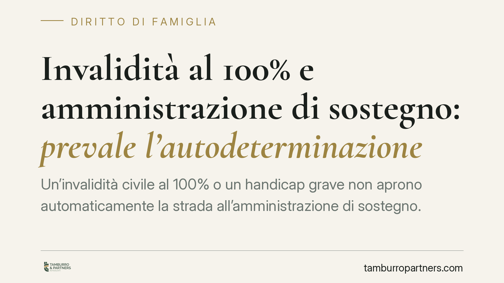

Invalidità al 100% e amministrazione di sostegno: prevale l'autodeterminazione
Un'invalidità civile al 100% o un handicap grave non aprono automaticamente la strada all'amministrazione di sostegno. La Corte di Cassazione ha ribadito che ciò che conta è la verifica concreta della capacità di autodeterminarsi: quando la compromissione è solo fisica e la persona esprime consapevolmente la propria volontà, la misura di protezione non si giustifica. Un principio che ridisegna il rapporto tra tutela e libertà personale.

Il caso
La vicenda ha origine dalla richiesta di apertura di un'amministrazione di sostegno presentata nei confronti di una persona affetta da grave patologia fisica, con invalidità civile riconosciuta al 100%. Nonostante il quadro clinico severo, il beneficiando conservava piena lucidità e capacità di comprendere e volere, opponendosi all'apertura della misura.
La Corte di Cassazione, Sezione I Civile, ha respinto l'impostazione che equipara l'invalidità grave alla necessità di protezione giuridica. Il messaggio è netto: l'accertamento medico-legale e la valutazione giuridica della capacità di autodeterminarsi appartengono a piani distinti.
Inquadramento normativo
L'art. 404 del Codice civile individua il presupposto dell'amministrazione di sostegno nell'impossibilità, anche parziale o temporanea, di provvedere ai propri interessi per effetto di un'infermità o di una menomazione fisica o psichica.
Il punto centrale, spesso frainteso, è che si tratta di un requisito funzionale, non diagnostico. La norma non guarda alla gravità della patologia in sé, ma all'effettiva incidenza di quella condizione sulla capacità della persona di gestire i propri interessi. L'invalidità civile misura una condizione medico-legale ai fini assistenziali e previdenziali; l'amministrazione di sostegno risponde a tutt'altra domanda: la persona è in grado, da sola o con supporti, di compiere gli atti che la riguardano?
Una menomazione esclusivamente fisica, per quanto invalidante, non compromette di per sé il processo decisionale. Se la persona comprende, valuta ed esprime scelte consapevoli, il fondamento della misura viene meno.
Questa lettura è coerente con l'art. 12 della Convenzione ONU sui diritti delle persone con disabilità, che afferma il pari riconoscimento della capacità giuridica e impone allo Stato di privilegiare misure di sostegno rispetto a modelli sostitutivi della volontà. Il principio guida è quello della minima invasività: la protezione deve limitarsi allo stretto necessario, senza comprimere l'autonomia oltre quanto la condizione concreta richiede.
Implicazioni pratiche
Per le famiglie e per chi assiste una persona con disabilità fisica grave, la pronuncia ha ricadute concrete. L'idea diffusa secondo cui una percentuale elevata di invalidità legittimi automaticamente il ricorso al giudice tutelare è errata e, se posta a base del ricorso, espone al rigetto.
Chi propone la domanda deve dimostrare non la gravità della malattia, ma l'incapacità funzionale di provvedere ai propri interessi. In assenza di questo elemento, il giudice non può disporre la misura, tanto più quando l'interessato manifesta una volontà contraria consapevole.
Di converso, per la persona con disabilità la decisione rappresenta una tutela della propria autodeterminazione: la limitazione fisica non giustifica una compressione della capacità di agire. Chi conserva lucidità mantiene il diritto di decidere per sé, eventualmente avvalendosi di strumenti di supporto meno incisivi.
È utile ricordare che l'ordinamento offre alternative all'amministrazione di sostegno per gestire limitazioni operative di natura fisica, senza intaccare la capacità giuridica.
Cosa fare in concreto
- Distinguere il piano medico-legale da quello funzionale: prima di ipotizzare una misura di protezione, verificate se esiste una reale incapacità di provvedere ai propri interessi.
- Valutare gli strumenti alternativi: procure ad hoc, deleghe operative (bancarie, amministrative) e mandati possono coprire l'esigenza pratica quando la difficoltà è solo fisica.
- Documentare la volontà dell'interessato: quando la persona è lucida, la sua opinione va raccolta e verbalizzata, perché il giudice deve tenerne conto.
- Impostare correttamente il ricorso: la domanda ex art. 404 c.c. deve dimostrare il requisito funzionale, non la sola diagnosi; un'impostazione centrata solo sulla percentuale di invalidità è determinante nel condurre al rigetto.
- Rivalutare periodicamente le misure già in essere: se la compromissione è temporanea o migliorabile, va verificata la permanenza dei presupposti.
Il ruolo dell'autodeterminazione nell'amministrazione di sostegno
La direzione è chiara: l'amministrazione di sostegno non è una conseguenza automatica della disabilità, ma una risposta calibrata su una specifica incapacità di autodeterminarsi. Dove questa manca, prevale la libertà della persona di decidere per sé. Un principio che impone rigore nell'accertamento e centralità della volontà dell'interessato.
---
Contributo informativo a cura di Tamburro & Partners Avvocati - Avv. Giuseppe Tamburro. Non costituisce parere legale.
Ogni famiglia ha il suo equilibrio.
Separazione, divorzio, affidamento, assegno: se vuoi un confronto riservato su una specifica situazione, scrivi allo studio. Ti rispondiamo entro un giorno lavorativo.